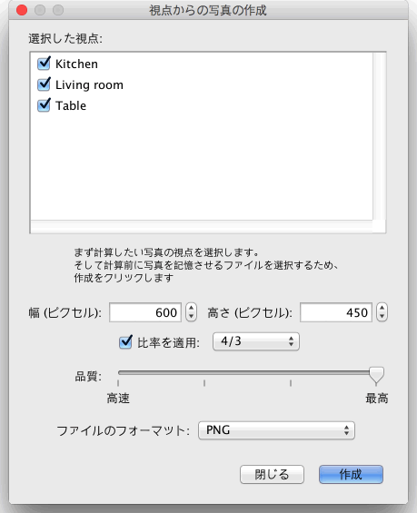

最上級と次のレベルに画像質が設定されている場合は、位置と照明の状態が画像に影響を及ぼします。初期設定では、昼間の明るさで、天井照明が自動的に各部屋に設置されています。
照明度を高くしたい場合は、天井照明を追加する のチェックボックスのチェックを取り除き,
照明 のカテゴリーからオブジェクトを追加し、 その照明の光の明るさを調節するか、その属性を編集して下さい。
日差し、日差しの色、その方向は、日付、一日の時間帯によって変わります。又、北側、地理的位置、時間帯など コンパス画面で編集できる属性にもよります。全体的なイメージの明るさは3Dビュー
編集 画面で調節できる照明の明るさにもよります。
その他、写真を作成 画面では以下、4種類のレンズが選べます。
 |
|
 |
初期設定 レンズ
|
被写界深度 レンズ |
 |
|
 |
| 魚眼レンズ レンズ |
球面 レンズ |
グループ単位に写真を作成したい場合は、3Dビュー > 3Dビューを保存する...をメニューから選択、視点を保存し 3Dビュー > 視点からの写真を作成する...をメニューから選び写真を作成します。 この操作を選択すると、ダイアログの画面が表示されて、サイズ、画像質、イメージ保存ファイルのフォーマットの設定が、写真を該当のファオルダーに保存する前に可能です。
画像質が最上級とその次のレベルでは、日時、レンズは写真を作成 画面で最後に使用されたものに設定されます。 写真を作成 画面を開いてた事がない場合、又は、日時をその画面で変更してない場合は, その間取りが作成された日時、日中に設定されます。
 |